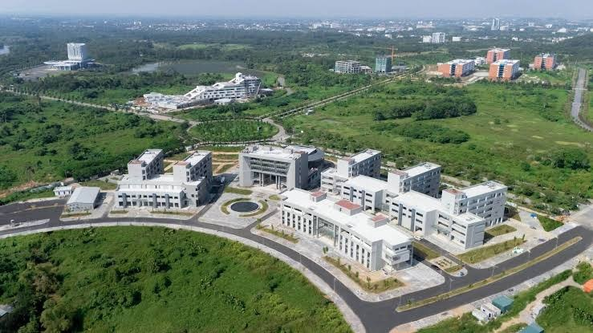

PAIRS Lab · VNU-UET
Perception, Autonomy, and Intelligent Robotics Systems Lab
Perception, representation and learning for robots that operate in the real world.
PAIRS Lab is based in the Robotics Department at the University of Engineering and Technology, Vietnam National University, Hanoi. We study how robots perceive, map and act in the real world: active and semantic SLAM, robust perception and autonomous navigation, robot learning and human–robot interaction, and agentic robotics and industrial vision.
![Research overview of PAIRS Lab: four directions around robot autonomy. 1. Active and Semantic SLAM: Where am I, and what is around me?; 2. Robust Perception and Autonomous Navigation: How do I move safely in hard conditions?; 3. Robot Learning and Human–Robot Interaction: How do I learn skills and work with people?; 4. Agentic Robotics and Industrial Vision: How do I plan tasks and deliver them in industry?. Each direction feeds the next: maps & poses, safe motion, skills, tasks & goals. Platforms: Quadrotor UAV, TurtleBot 4, UR3 arm, Pi Mouse, Dual-arm robot. Applications: Industrial inspection, Solar-farm monitoring, Service robots, Factory safety, Smart traffic.](images/directions/overview.svg)

Meaningful, uncertainty-aware maps for robots that explore on their own.
Explore direction
Perception that holds up in hard conditions, connected to safe navigation.
Explore direction
Robots that learn from demonstrations and work naturally with people.
Explore direction
Robots that plan and coordinate as agents, and vision for industrial inspection.
Explore directionOur paper BPDA-GMM: Bayesian Probabilistic Data Association via Gaussian Mixture Models for Semantic SLAM has been accepted for publication in IEEE Robotics and Automation Letters (RA-L).
Our paper Semantic Visual Simultaneous Localization and Mapping: A survey on state of the art, challenges, and future directions has been accepted for publication in Robotics and Autonomous Systems.
Our paper SR-SLAM: Scene reliability-based RGB-D SLAM in diverse environments has been accepted for publication in Robotics and Autonomous Systems.
Our paper on IRAF-SLAM: An Illumination-Robust and Adaptive Feature-Culling Front-End for Visual SLAM in Challenging Environments has been accepted to European Conference on Mobile Robots (ECMR2025).
Our paper on ESRPCB: An Edge-Guided Super-Resolution Model and Ensemble Learning for Tiny Printed Circuit Board Defect Detection has been accepted to Engineering Applications of Artificial Intelligence (EAAI).


We welcome students and collaborators who want to build robots that work reliably in the real world.